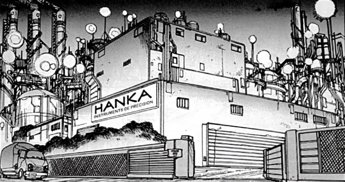
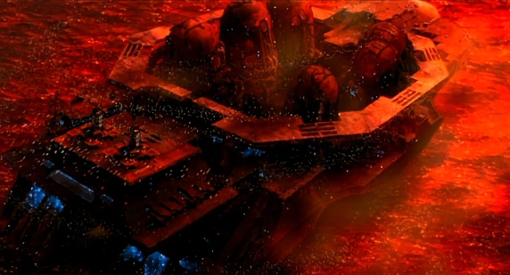
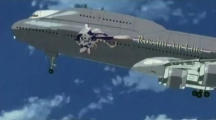
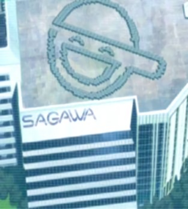
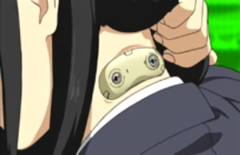

CORPORATIONS
Of course, there are hundreds of more corporations in this setting. These are all the ones mentioned.
Derumo : A company that followed Tokura in cyberbrain development. They specialized in crafting Cyberbrain cerebral cores. Unlike Tokura, they are still doing quite well.
Genesis Androids / Genesis Andross Co. : A well known robotics company, they feature a large lineup of various androids, mostly female. Rumors indicate many of their models have been illegally modified. Genesis Androids are common in the love doll underground. They made the GA-07-GL Jeri Android, one of the most popular models among hardcore users, now considered somewhat of an antique.
Hanka Precision Instruments : Hanka Precision Instruments is a major manufacturer of AI robots. They manufacture a variety of different models from defense to waitpersons. Recently, they were caught in a scandal where they were dubbing the ghosts of children into a robot known as the Tomliand Prototype to achieve a greater sense of human personality. When these robots started going berserk, their plot was found out and their president was arrested. Hanka is still in business but their profits have severely dropped. It is uncertain if they will make it through the next five years. Another corporation, Locus Solus, would attempt the same process later. The result was more successful, and the side effects and the eventual backlash more severe.

Japan Micro Industries : Another target of the Laughing Man, Japan Micro was initially a Micro Machine company. They still consider them their largest commercial asset.
Kenbishi Heavy Industries : One of the biggest corporations around, Kenbishi builds tanks, helicopters and weapons. They have a biodesic dome where they test their machines around a small city standing for the corporate headquarters. They also make neurochips like the ones for the Tachikomas. Kenbishi multi-ped tanks are infamous. Kenbishi manages to survive many scandals because their massive stock worth. They have been implicated in stealing patents from their own scientists. One of their own tanks went on a rampage after escaping the test facility. Through it all, Kenbishi manages to stay afloat.
Kuromatsu Electrics : A smaller company, KE did some work around Old Tokyo. They employed some of the lost and refugees of old Tokyo, offering new cybernetic bodies with those at least 98% cyberized to work for them. They had uncovered a nuclear power plant in Old Tokyo and were trying to excavate plutonium illegally. The government took over the operation KE was never penalized.

Kyo-Re : Kyo-Re is a military contractor, maker of Therm-Optic Camouflage. They are affiliated with Poseidon, another name for Greater Japan Technology and Research.
Locus-Solus : A relative newcomer, Locus-Solus burst onto the scene with revolutionary robotic designs. Years ahead of Genesis or Hanka, Locus-Solus started small, expanding when they narrowed their assembly line to producing high-end Gynoids. Rumors floated around that the Locus-Solus prototypes were so human-like to pass a cursory examination. However, whispers passed as to the extent of their realism. Public opinion frowns on companies that built sexaroids so most don't publicly offer them, allowing their consumers to modify they companion robots illegally. Apparently, Locus-Solus offered their prototype Hadaly droids pre-modified. To avoid regulations and decency violations, Solus shifted all production to a multi-national ship anchored far off Japan, in international waters. There, Solus produces some impressive robots. They do still operate a Japanese HQ in Bertrave.
Locus-Solus crumbled when evidence of their robot unique attributes were exposed. Apparently, Solus had refined the same technique Hanka had used (dubbing ghosts illegally into dolls) with better results. However, the Hadaly types fractured more severe than the Hanka models, going berserk and killing their masters. Because of the severity of these side effects, Locus could not cover their tracks fast enough and were destroyed when the case became public.
Meditech Corp : "Give us some spare genes and we'll grow you spare organs". Meditech, one of the few companies not dealing with cybernetics exclusively, uses the side effects of that industry to make a killing. While other companies concentrated on progressing the machine, Meditech returned to the organic, developing organic replacements for the open market. They are now the largest organ dealer in the world. They first began the purchasing, selling, and distribution of used organs from cybernetic surgeries. They would supply these organs to those not wanting cybernetic replacements or to those incapable of them. Eventually, Meditech expanded in cloning. Full body cloning is still illegal but cloning parts are not. The patented technique involves splicing a customer's DNA into a pig. The organs are available for use for the entire lifespan of the animal. They also bread compatible pigs for spare organs. If a customer does not use the organs in the lifespan of the animal, Meditech will broker their sale on the open market. The CEO of Meditech was so dedicated to the industry, he sold off his own organs, implanting his brain in a Jameston type cyborg body. Meditech is owned by the Poseidon Group. They operate pig farms in several other countries. Meditech Bherel was struck by the Human Liberation front and their holds were destroyed (all the pigs were killed). With the advancement of cloning increasing each year, the process of reproducing organs in pigs grows less popular. The pig path remains the cheapest and some rival groups developing organ cloning still consider the pig path their greatest competition.
Megatech : Megatech is one of the major manufacturers of prosthetic bodies, robots and AIs in the World. They are known in the industry for producing top of the line equipment, and for their highly popular Class-A prosthetic bodies. They have the largest selection and largest production line of prosthetic bodies. They are known to be the toughest and most realistic. They were one of the first companies to popularize cyberization as an augment rather than a supplement. All the Cyborgs in Section 9 have bodies and parts from Megatech, and the SDF maintains contracts with them as well. Their headquarters are located on an island outside Newport city. In truth, they are the island, a constructed floatation similar to the city itself.

MicroTel : A MicroMachine Company formed late in the industry. A Laughing Man target.
Nanoplant Industries : A smaller MicroMachine Company, Nanoplant was another target for the Laughing Man target.
Nanyou New Agency : The NNA is a news network often accused of being subject to governmental influence. This is further supported by their critical stance against refugee policies. They were a target of the Individual Eleven terrorist group.
Neutron Company : NC is the leading American company specializing in cybernetics. They are one of the few with a foothold in Japan.
Poseidon Industrial Co. : Poseidon is a major cybernetics and micro machine company known for some real fringe designs. They are a real Japanese heavyweight. They have also contracted work for the JSDF, supplying weapons and technology to the Army. Poseidon, not known for their Micro machine technology, is partially credited for the most well known use of them, that of the Japanese Miracle. This achievement vaulted Poseidon into the limelight, pushed atop a hill they have yet to be knocked off of. In 2032, they would be implicated in a government conspiracy revolving around the Cabinet Intelligence Agency and the Individual Eleven terrorist group.
In all, they are one of the largest corporations worldwide, with fingers in almost every facet of the modern world. They own several subsidiary corporations including Meditech. They operate a collection of gigantic marine city clusters.
Rabbit-logo Courier : One of many black market couriers that exist in Niihama City. He has an official name, but he is called the 'Rabbit-logo Courier' because of his mascot character. Couriers only take cash for a job, turning down E-money, cards, stocks, or anything else. Half the fee is paid up front, and the remainder is C.O.D. to be paid once the cargo delivery keycode receipt has been verified. Depending on the money, they will deliver anything to anywhere for you.
Rossini Air Line : A well-known and prominent airline in Asia.

Seburo Corporation : A firearms founded in October 2024. Now, almost all ammunition in modern firearms takes Seburo rounds.
Sagawa Electronics Inc : Sagawa Electronics Inc. is the main company of the Sagawa Group. The Sagawa Group is a massive corporate Zaibatsu that has its hands in every piece of the corporate pie. Sagawa Electronics was once a midsize corporation who manufactured a variety of electronic goods : optics, cyberware, toasters etc. until the Public Security Bureau stepped in during the war. A man named Kagasaki (who is now Minister of the Interior) used the corporation to get close to the Russian bases. Along the way, he embezzled enough money to launch the Sagawa Group into a prosperous future. Sagawa operates a Geofront in Betrave. Sagawa Electronics was a Laughing Man target during his corporate terrorism.

Satsuma Meditechs : The most powerful corporation in Kyushu, Satsuma was targets by the Laughing Man during his terrorism. A MicroMachine Company, Satsuma Meditechs was the only corporation that didn't get funds from the government when the Laughing man blackmailed them.
Serano Genomics : The primary company in the Laughing Man blackmail case, the CEO of Serano was kidnapped and held for ransom by the primary suspect. This first event marked the beginning of the Laughing Man blackmail acts. Serano pioneered the MicroMachine industry and was the first company to file a patent for a MM treatment of Cyberbrain Sclerosis. Serano received funds from the government to compensate for the loss of stock from the Laughing Man. Serano later admitted that the patent for the treatment was premature and that the MicroMachines they developed to treat the disease were ineffective. Serano was assassinated before being able to testify. Their corporate headquarters are located in Holland.
Tadokoro Trading : A smaller corporation with a Chairman with a fetish for companion androids, Tadokoro was struck by the a super theft ring known as Cash Eye. Later, Tadokoro was arrested for money laundering.
Tokura Electronics : Not so large now, but Tokura pioneered brain cyberization. They spear front in the industry, they were later passed by other companies with sleeker, less evasive designs. The daughter of the CEO of Tokura was the first person ever implanted with Cyberbrain implants. She would later be kidnapped by members of the New World Brigade and was remained missing until 2029 where members of Section 9 rescued her rapidly aged body from the NWB. It was never revealed how she had aged so quickly or if her cyberbrain prototype was the cause.

Tonda Inc. : Tonda constructs robotics but none resembling humanoids. They made robots and sentinels for high security buildings. They have allowed several other models to be sold privately. Of these, the Tonda Cyclops is the most popular and the latest, a line of cyberdogs.
Toyoda Chemicals : A smaller company that freelances in Cybernetic bodies.
Can organs be cloned for use in transplants ?
Another potential application of cloning to organ transplants is the creation of genetically modified pigs from which organs suitable for human transplants could be harvested. The transplant of organs and tissues from animals to humans is called xenotransplantation.
Why pigs ? Primates would be a closer match genetically to humans, but they are more difficult to clone and have a much lower rate of reproduction. Of the animal species that have been cloned successfully, pig tissues and organs are more similar to those of humans. To create a "knock-out" pig, scientists must inactivate the genes that cause the human immune system to reject an implanted pig organ. The genes are knocked out in individual cells, which are then used to create clones from which organs can be harvested. In 2002, a British biotechnology company reported that it was the first to produce "double knock-out" pigs that have been genetically engineered to lack both copies of a gene involved in transplant rejection. More research is needed to study the transplantation of organs from "knock-out" pigs to other animals.